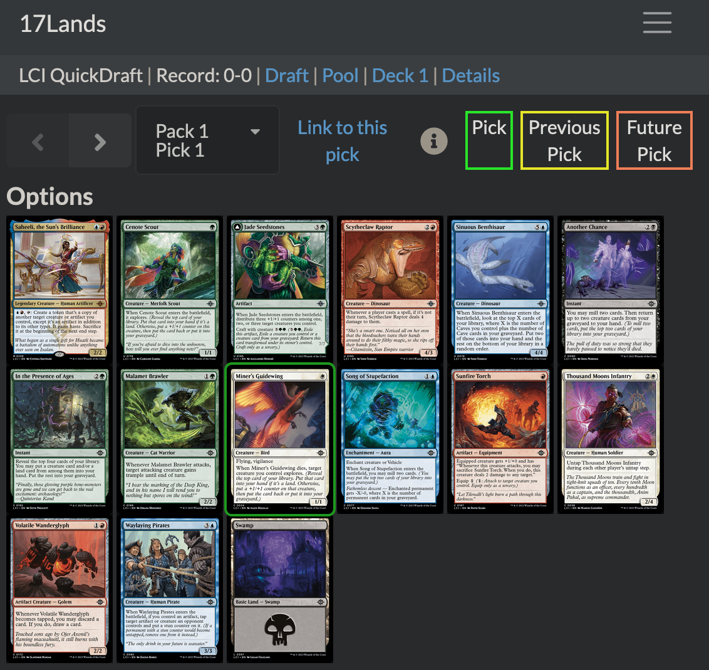

Joel Nitta
日本語
Publications
Software
Blog
Talks
Courses
CV
Categories
All
(8)
Magic the Gathering
(1)
R
(4)
Spatial phylogenetics
(1)
blogging
(2)
distill
(1)
docker
(1)
ferns
(1)
plotting
(1)
r
(1)
reproducibility
(2)
workflow
(1)
Blog
Documenting blog posts with renv
R
blogging
reproducibility
One solution to the ‘ack I can’t re-knit my post’ problem
Jan 11, 2024

Getting started with 17lands data in R
R
Magic the Gathering
Drafting with data for fun and improved win-rate
Jan 1, 2024
Making a fern family tree
R
ferns
How to make a family-level phylogenetic tree of ferns (or anything else)
Feb 21, 2023
canaper is on CRAN
R
Spatial phylogenetics
Announcing the canaper R package!
Oct 7, 2022
Enable giscus in Distill
blogging
distill
How to use the giscus commenting system on a Distill blog
Nov 24, 2021
Managing bioinformatics pipelines with R
workflow
reproducibility
How to combine Conda, Docker, and R to run modular, reproducible bioinformatics pipelines
Nov 16, 2021
Selecting color schemes for mapping ancestral states
r
plotting
How to change the phytools default color scheme when visualizing the results of ancestral character state estimation
Jun 2, 2021
Building R docker images with secrets
docker
Keep it secret. Keep it safe.
Feb 16, 2019
No matching items